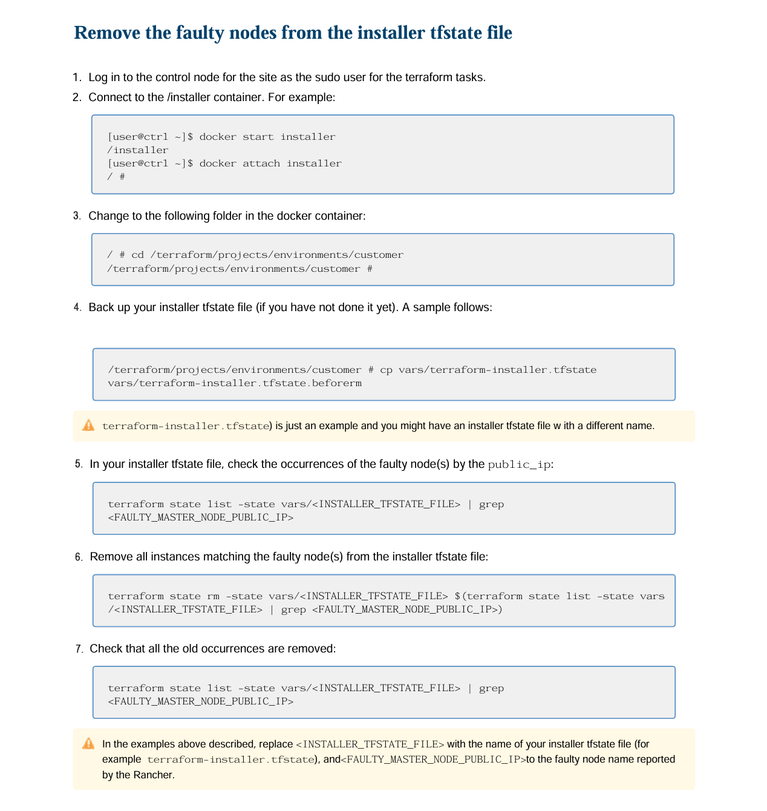
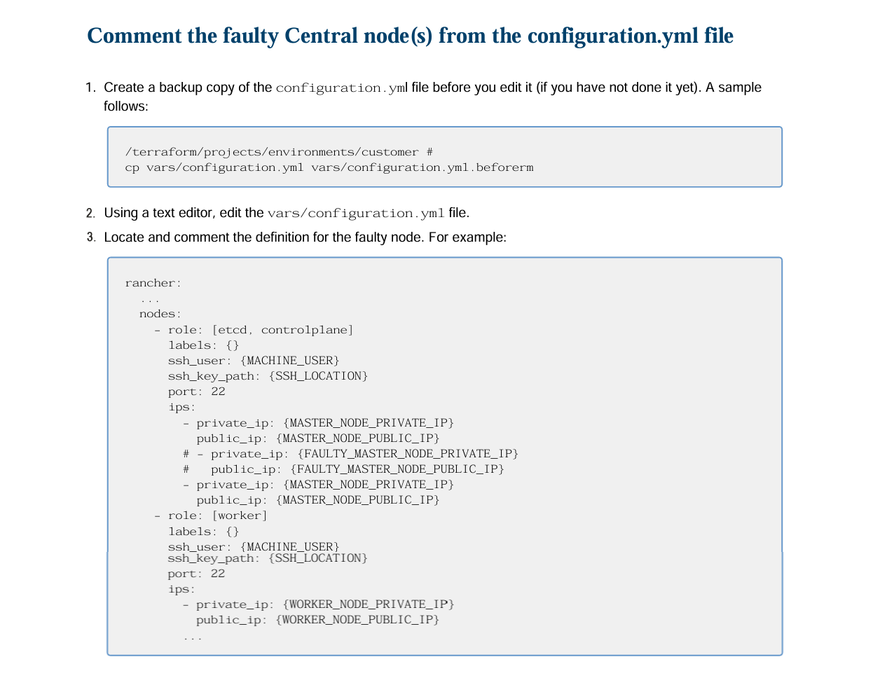
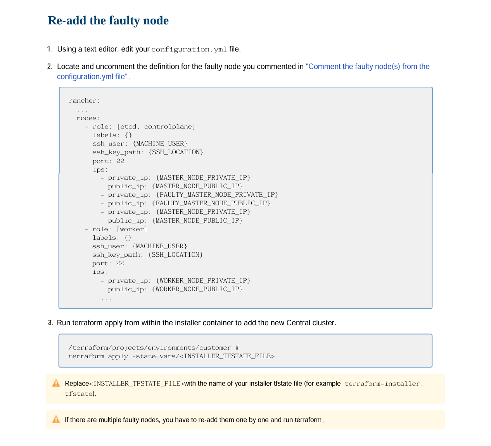
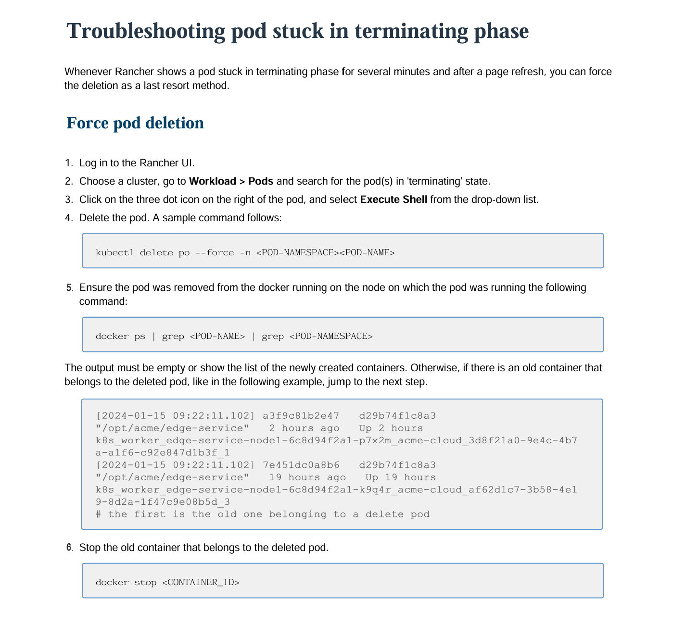

Beyond product guides, I documented recovery and troubleshooting procedures for a Kubernetes-based platform used by support engineers and administrators.
I turned engineering fixes into clear, repeatable procedures, with verification steps to confirm the issue was resolved.
A recovery procedure for replacing an unreachable node, including removing the failed node from the installer state and adding the replacement node.



A recovery procedure for a pod stuck in the terminating phase, including checking for and stopping an orphaned container.

The procedures provide clear, repeatable steps for recovering common node and pod issues, with verification built into each one.